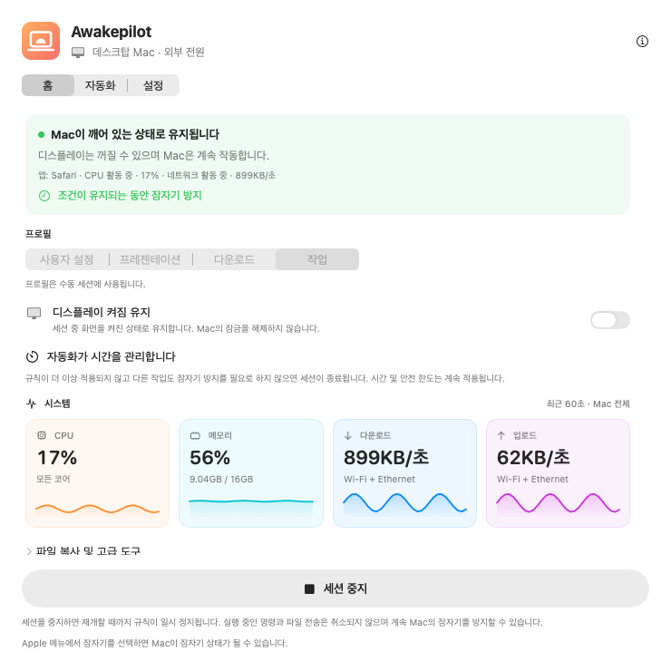
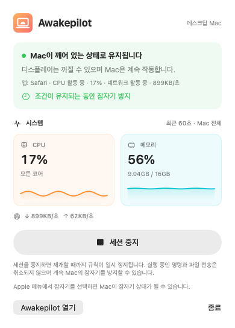
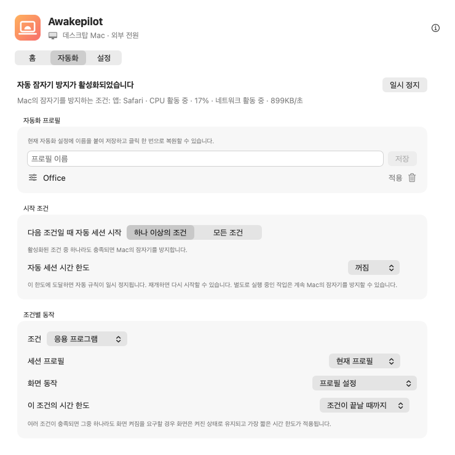

유연한 세션
무제한, 지정한 시간, 또는 정확한 날짜와 시각까지 잠자기를 방지합니다.
15분1시간2시간∞
빌드, 영상 내보내기, 대용량 전송 중 자동 잠자기를 막습니다. 시간이나 조건을 설정하세요. 시간이 끝나거나 조건이 해제되면 보호를 종료하지만, 다른 작업이 필요로 하면 유지합니다.


시간이나 시작 조건을 선택하세요. 보호가 끝나면 Mac은 일반 잠자기 설정을 따릅니다. 즉시 잠자기로 전환하지는 않습니다.
무제한, 지정한 시간, 또는 정확한 날짜와 시각까지 잠자기를 방지합니다.
CPU, 메모리, 다운로드와 업로드를 명확한 실시간 그래프로 확인하세요.
먼저 감시할 대상을 선택하세요. 앱이 열려 있거나, 프로세스가 실행 중이거나, 선택한 드라이브가 연결되어 있으면 Mac을 깨어 있게 합니다.
전원 어댑터, 배터리 한도, UPS 상태와 화면 설정을 따릅니다.
선택한 쓰기 가능한 외장 드라이브의 작은 파일을 주기적으로 갱신하여 드라이브의 작동 유지를 돕습니다.
언제 보호가 시작되었고 왜 유지되었으며 언제 끝났는지 확인하세요.

잠자기를 막고 있는 앱, 프로세스, 조건을 확인하세요. 규칙이 더 이상 성립하지 않고 다른 작업도 보호를 필요로 하지 않으면 일반 잠자기 설정이 적용됩니다.
앱이 열려 있다고 작업이 계속된다는 뜻은 아닙니다. CPU나 네트워크 활동이 줄어도 작업 완료를 확인할 수 없습니다.
감시 대상, 화면 동작, 시간 한도를 선택하세요. 활성 조건과 최근 변경 사항은 앱에서 확인합니다.
스튜디오 네트워크나 업무 VPN에서 시작합니다. 통화에 필요한 화면을 유지하고 안전 한도에서 중지합니다.
내보내기 프로세스를 이름으로 감시하고 화면 꺼짐을 허용합니다. 프로세스가 끝나면 보호를 해제하지만, 다른 규칙이나 작업이 필요로 하면 유지합니다.
보관 디스크가 마운트되면 복사를 보호합니다. Drive Alive는 선택한 쓰기 가능한 볼륨에만 사용합니다.
한 조건으로 시작하거나 모든 조건을 요구하세요. 예를 들어 사무실 Wi-Fi에 연결되고 외장 드라이브가 연결된 경우입니다.
선택한 쓰기 가능한 외장 드라이브에서 작은 표시 파일을 갱신합니다. 다른 앱의 파일은 덮어쓰지 않으며, 비활성화하면 자체 파일을 삭제합니다. 드라이브를 다시 연결해도 정리합니다.
항상 상태를 이해할 수 있습니다. Awakepilot는 CPU나 네트워크의 모든 샘플로 기록을 채우지 않고 의미 있는 변화를 기록합니다.
네트워크 활동이나 연결된 백업 드라이브를 감시합니다. 활동이 한도 아래로 유지되거나 드라이브가 해제되면 규칙이 끝납니다.
터미널 프로세스를 이름으로 감시하거나 명령이 실행되는 동안 Mac의 잠자기를 방지합니다.
프레젠테이션 조건이 활성일 때만 화면 켜짐 프로필을 적용합니다.
전원과 시간 안전 한도를 유지하며 Mac에 접속할 수 있게 합니다.
계정, 광고, 분석, 원격 측정이 없습니다. 설정은 로컬에 저장하며, 업데이트 확인과 공식 패키지 다운로드를 위해 Awakepilot 웹사이트에 연결합니다.
개인정보 보호 자세히 보기 →서명 및 Apple 공증을 마친 macOS 유니버설 버전을 다운로드하세요.
응용 프로그램으로 드래그하세요. 계정이나 구독이 필요 없습니다.